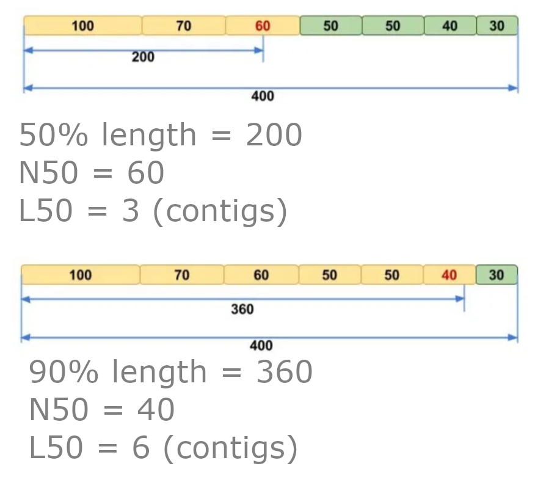

Chapter 6 Genome assembly assessment

After carrying out an assembly it is always advised to assess its quality. We will carry this out with three tools:
QUAST- Gives assembly stats related to contiguity.BUSCO- Estimates completeness of a genome.CheckM- Estimates completeness and contamination of a genome.
6.1 Assessment: Conda environnment & directory

Open a new terminal (right click on the main screen, choose Applications -> Shell -> bash).
We will use the bacterial_genome_assessment conda environment for our genome assessment tools.
chos 8
. usebacterialgenomeassessmentEnsure you are in the the standard_workflow directory for this new terminal and environment.
cd ~/bacterial_assembly/standard_workflow6.2 QUAST

QUAST is the most used tool to assess genomes. It gives various statistics related to the contiguity of the assembly. Unless stated these statistics are based on contigs that are >=500bp.
Create an output directory and run QUAST.
#Make output directory
mkdir -p quast/redbean
#Run QUAST
quast -o quast/redbean redbean_assembly/ecoli.ctg.faParameters
-o: The output directory.- The input file/s are at the end of the command without a flag (e.g.
-o).- Note :
QUASTcan be run on multiple assemblies giving a report which contains info on all the input assemblies.
- Note :
QUAST produces reports in various formats. We will look at the html report.
firefox quast/redbean/report.htmlInspect the table and interact with the interactive plots.
Statistics such as length, # contigs (number of contigs), and GC (%) are self explanatory. Two definitions that you may not be aware of are N50/N75 and L50/L75.
To calculate N50 and L50:
- Order the contigs from largest to smallest.
- Find the point that is 50% the length of the assembly starting from the start of the largest contig going toward the smallest contig.
- Determine which contig this point belongs to.
- The N50 is equal to the length of that contig.
- The L50 is equal to the number of contigs that is >= in length to the N50.
To find the N75 & L75 change the 50% to 75% in point 2. You can use any number between 1-100 for the Nx or Lx.
Additionally, below is a visual demonstration of Nx and Lx.

6.2.1 QUAST Questions

Answer the below MCQs (Multiple Choice Questions) based on redbean's report.html.
- How many total contigs are there?
- Approximately how much bigger is the total assembly (all contigs) compared to the largest contig (to the nearest 10k)?
- Does the GC% match what is know about E.coli? (You may need to google)
Escherichia GC% varies between 50.4-50.8%. Our assembly's GC% is 50.8% so it matches perfectly. This gives us more confidence that we have assembled an Escherichia genome.
- Why does the the N50 and N75 have the same value?
6.2.2 QUAST summary
Overall these contiguity stats are good. It is not a one contig assembly, which would be our aim for a single chromosome genome, but it is close. It mainly consists of one large contig with 3 smaller contigs.
Some things you will want to look out for in future projects:
- High number of contigs, with small N50: This may indicate the genome assembly is very uncontiguous and so the assembler had issues with assembly.
- It is possible the genome is a particularly difficult genome to resolve.
- The input data could be poor. Examples include:
- Low quality.
- Low coverage.
- Average coverage could be good but it is possible areas of the genome have low coverage so these areas could not be assembled well.
- Length is not correct: Could be caused by several reasons:
- Parts of the genome are duplicated in the assembly causing the assembly to be too long. This can be caused by parts where a consensus could not be reached effectively.
- A short assembly can indicate that parts of the genome are missing.
- A drastically increased length can indicate the presence of contamination from another organism. The GC(%) can give a clue if this may be the case.
Further assessment can elucidate if there are any issues and what the issue may be.
6.3 BUSCO

BUSCO stands for Benchmarking Universal Single-Copy Orthologs. The tool is used to estimate the completeness of genome assemblies by determining how many BUSCOs are present.
Prior to running BUSCO we will create an output directory for the BUSCO analysis.
mkdir -p busco/redbeanBUSCOs are genes that are:
- Universal: The genes are present in all organisms of a specific lineage.
- Single-Copy: The genes are only found as one copy.
6.3.1 BUSCO lineages

BUSCO has many different lineage datasets. These are datasets of the different groups of BUSCOs found in various different lineages. Carry out the below command to see all these different datasets.
busco --list-datasets | less -SYou will notice that the lineage datasets are at various taxonomic levels going from kingdom (bacteria, archaea, & eukaryota) down to order (rhizobiales, burkholderiales etc.). It is always good to be as specific as you can to your organism's lineage. A more specific lineage will have more BUSCOs that a more generic one.
Note: All datasets end with _odb10 which stands for OrthoDB version 10.
Looking through the choices (and using the NCBI taxonomy website) what lineage dataset would you use for the following genera?
- Psychrobacter (Taxonomy ID: 497)
- Iamia (Taxonomy ID: 467975)
- Phycisphaera (Taxonomy ID: 666508)
- Atribacter (Taxonomy ID: 2847777)
6.3.2 Run BUSCO

For our E.coli we will choose the enterobacterales_odb10 as our lineage dataset. With that we can run BUSCO on our genome assembly.
Note: The parameters -i, -l, -m, & -o are all letters.
busco \
-i redbean_assembly/ecoli.ctg.fa \
-l enterobacterales_odb10 \
-m geno \
-o ecoli \
--out_path busco/redbeanParameter choice
-i: The input genome assembly in fasat format.-l: The lineage dataset to be used. This has to end with the_odb10part. This will download the dataset (if it does not exist) into a directory calledbusco_downloadsin the current directory. The directory will be created if it doesn't exist.-m: The assessment mode.geno= genome assemblies (DNA)tran= transcriptome assemblies (DNA)prot= annotated gene sets (protein)
-o: The run name. Output folders and files will be labelled with this name.--out_path: Path where the output directory will be created.
6.3.3 BUSCO output

There are many output files in the directory busco/redbean/ecoli. A full list of the output can be found in the following link: https://busco.ezlab.org/busco_userguide.html#outputs
I ignore the majority of the output files most of the time, instead only looking at the short summary file.
less busco/redbean/ecoli/short_summary.specific.enterobacterales_obd10.ecoli.txtThis provides us with 6 values. These values are presented in terms of percentage (along the top line of the Results) and total numbers (the next 6 lines). The values represent:
- Complete BUSCOs : The number of complete BUSCOs discovered. The closer this value is to 100% the better. This number is the sum of the next two values.
- Complete and single-copy BUSCOs: The number of BUSCOs found as complete and single-copy. The closer this number is to 100% the better. A good assembly will generally be >90%.
- Complete and duplicated BUSCOs: Complete BUSCOs that have been found two or more times within the assembly. This indicates there are duplicated areas of the genome. Preferably we would like this number to be low.
- Fragmented BUSCOs: This could indicate that there are genes that are only partially present within the genome. This could be due to misassmebly.
- Missing BUSCOs: These are BUSCOs that could not be found in the genome assembly. This could indicate that parts of the genome are missing in the assembly.
- Total BUSCO groups searched: This represents the total number of BUSCOs within the lineage dataset used for analysis.
For more info on interpreting the results please see the following link: https://busco.ezlab.org/busco_userguide.html#interpreting-the-results
6.3.4 BUSCO questions

Answer the below MCQs based on the results in your short summary file.
- Ignoring "total BUSCO groups searched", which value is the highest?
- What is the sum of fragmented and missing BUSCOs?
- Which value would you want to be highest for a complete non duplicated assembly?
6.3.5 BUSCO summary

The BUSCO stats are OK. There are more fragmented and missing BUSCOs than we would like. We'll try to improve this with polishing. We could also try to get some better data (maybe some Illumina data) or try a different assembler. However, as this is a workshop we will continue on with some more assessment.
6.4 CheckM
CheckM can also be used to estimate the completeness of a bacterial genome, however I prefer BUSCO for this. Instead, we will use CheckM to estimate contamination within our assembly.
First create an output directory.
mkdir -p checkm/redbean/ecoliCheckM has many different commands. We will use its typical workflow which is conveniently wrapped into one command.
Note: This command can take >10 minutes.
checkm lineage_wf \
--tab_table \
-f checkm/redbean/ecoli/ecoli_checkm.tsv \
-t 8 \
-x ctg.fa redbean_assembly/ \
checkm/redbean/ecoliParameters
--tab_table: Creates a.tsvfile (tab seperated value) that acts a summary of results. This is the file we will inspect.-f: Path for output summary.tsvfile.-t: Number of threads to be used.-x: Suffix of genome assembly files to be analysed. The command will carry out analysis on all the files with this suffix in the bin directory.- The second last option (which is flagless) is the bin directory. The command will carry out the workflow on each file with the suffix as stated in the
-xparameter. - The last option (which is flagless) is the output directory.
Ignore all the other files and view the summary files.
less -S checkm/redbean/ecoli/ecoli_checkm.tsvThere are quite a few statistics but we are only interested in the Contamination column (you may need to use the right key to move to it). This value is a percentage. Is it a large value?
Thankfully not, it is less than 1%. If this was larger than 1% we may need to worry. If that was the case we could try to determine if it is real contamination and remove it if so. Please check out Blobtools2 if you are interested in contamination removal (link in Appendix)
If you are interested in the other values please check: https://github.com/Ecogenomics/CheckM/wiki/Reported-Statistics
6.5 Assessment recap

Our assembly looks good. Good contiguity figures from QUAST, and CheckM shows low signs, if any, contamination. The BUSCO values are not brilliant with some fragmented and missing BUSCOs.
In real analysis I would try another assembler to see if that would improve the BUSCO situation. For the purpose of time we will continue and I will let you explore other assemblers in your own time.